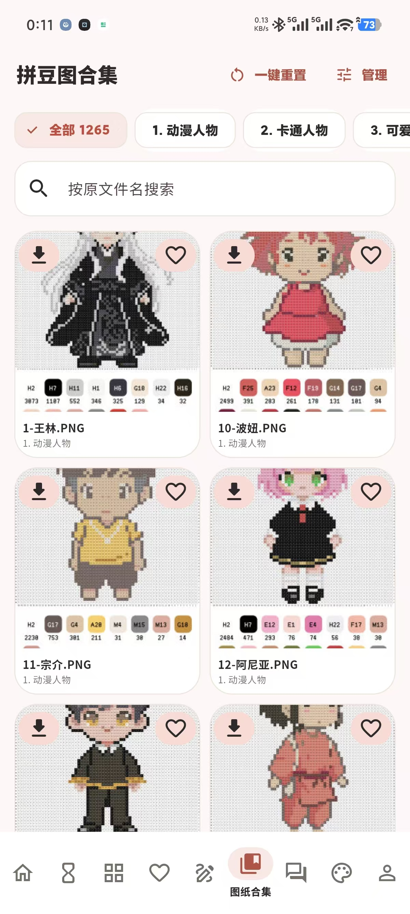

Android v2.8.10 完整 APK
适合手机和平板。包含照片制图、完整图库、画板、文字、色卡、作品管理、导出、备份和可选 AI 工作流。
Android APK 完整功能手册
把照片、文字和内置图纸，转换成真正能制作的品牌色号拼豆图。
正式下载
两个正式包都内置 1265 张授权图纸。Android 是通用 APK；Windows 是单文件安装程序，安装后直接从开始菜单运行。
适合手机和平板。包含照片制图、完整图库、画板、文字、色卡、作品管理、导出、备份和可选 AI 工作流。
一个安装程序封装 Flutter 桌面应用与全部图纸资源。
下载 Windows 安装程序Release 页面提供文件大小、SHA-256、测试范围和签名说明。
打开 v2.8.10 ReleaseAndroid 安装
APK 使用项目测试签名，适合直接安装体验。Android 首次安装来自浏览器的 APK 时，系统可能要求允许当前浏览器安装未知应用。
点击本页下载按钮，等待文件完整保存到手机“下载”目录。
按系统提示允许浏览器或文件管理器安装未知应用，仅需针对当前来源开启。
安装完成后启动应用。核心照片转换无需账号，也不要求连接服务端。
从相册导入自己的照片，或进入完整图库选一张现成图纸开始。
主工作流
首页把最常用的入口放在第一屏。选图后先调整裁切和参数，再生成色号明确、数量可核对的拼豆方案。
点击“从相册选择”导入已有照片，也可以调用相机。批量选择适合一次处理多张素材，最近作品用于继续之前的图纸。
20 到 200 格决定成品大小；颜色数量决定简洁度；肤色保护、主体识别和孤点去噪帮助保留轮廓并减少零碎豆点。



完整内置图库
图纸按动漫人物、卡通、动物、古风、美食、传统文化、游戏角色和其他主题分类。真实图纸库界面同时提供分类筛选、文件名搜索、预览卡片、收藏和高清原图入口；选择“读取高清原图”后可以继续识别、编辑或保存。
自由创作
自定义画板和文字拼豆适合名字、标语、像素角色和局部修正。桌面版提供更宽的操作区，Android 保留相同数据能力。
新建 20×20 到 200×200 画板，使用画笔、橡皮、填充、取色和移动工具。支持撤销、重做、草稿恢复、批量替换色号以及保存为作品。
输入中文、名字或短句，选择字体、字距、画板尺寸和颜色，把文字渲染成像素图。生成结果可以继续进入画板修改，不必一次定稿。
逐界面说明
下面按应用真实页面整理操作路径。打开 APK 后可照着入口逐项体验；需要联网的 AI 页面会明确提示并不会影响离线制图。
从相册选择、拍照、批量导入、文字拼豆、图片色号识别、AI 制图都在首页；下方显示最近作品，点击可继续编辑。
生成大图或 AI 任务时可放到后台，查看排队、处理中、成功、失败和取消状态，完成后直接打开结果。
支持搜索、排序、拖动重排、重命名、再次生成、收藏、批量导入导出、批量保存和删除；误删作品可从回收站恢复。
把图纸加入自定义收藏分组，按主题快速筛选；取消收藏不会删除“我的作品”中的原稿。
设置宽高和品牌色库，使用画笔、橡皮、填充、取色、移动、撤销/重做、批量换色；自动草稿、临时回收站和 .beadboard 工程导入导出保证可恢复。
按 24 个顶层分类浏览，支持原文件名搜索、预览/高清原图切换、收藏、管理和继续识别或编辑。
配置兼容 API 后可新建聊天、发送文字和图片附件、切换模型、查看历史、备注会话，并分享界面截图或 Markdown 聊天记录。
按品牌和系列筛选色卡，搜索编号或颜色名称，查看 RGB、HEX、LAB、尺寸等信息，并可生成色卡图片分享。
切换语言、主题、强调色、按钮音效和本地音乐；进入 API 设置、软件公告、内置浏览器、换机备份/恢复和版权说明。
在真实色、圆形效果、编号格子和颜色统计之间切换；可收藏、重命名、重新调整参数、生成不同方案、AI 修复模糊图、转入画板和导出。
支持单张或批量图片、方向校正、裁切比例、20–200 格尺寸、颜色数量、肤色保护、平滑去噪、抠图和模板选择。
图片色号识别显示坐标、原图和每格色号；手动抠图用于保留主体、去除背景后再生成拼豆图。
选择拼豆风格、上传照片、填写补充要求，可当前页等待或放入任务中心；支持失败自动重试、历史记录、任务详情和结果转拼豆。
管理中转地址、协议、密钥、对话/图片/视频模型，支持剪贴板一键导入导出、单项测试和全部模型检测；密钥保存在系统安全存储。
按今天、本周、本月和本年查看 Token，用图表查看近 7 天和 24 小时趋势，并按用途和模型拆分。
可选择作品、收藏、画板、回收站、处理历史、图纸库设置和本地音乐导出；新设备选择备份文件即可恢复，API 密钥需要重新填写。
全部功能地图
下面按真实入口说明各模块。基础功能离线可用，AI 模块只有在用户主动配置兼容 API 后才会调用网络。
裁切、降采样、颜色聚类、肤色保护、去噪和品牌色号映射。
入口：首页 → 从相册选择分类浏览 1265 张内置图纸，收藏、重命名、批量管理和读取高清原图。
入口：底部导航 → 图纸库画笔、橡皮、填充、取色、移动、撤销、草稿、导入图片与批量换色。
入口：底部导航 → 画板中文和其他文字像素化，控制字体、间距、尺寸、颜色与透明背景。
入口：首页 → 文字拼豆本地或 AI 识别图片中的色号，查看坐标图、原图和每个位置的颜色。
入口：首页 → 图片色号识别浏览 Artkal、MARD、COCO、Perler、Hama 等色卡，查询编号和颜色信息。
入口：底部导航 → 色库分类、批量选择、重命名、再次编辑、导出、恢复和保留期限管理。
入口：底部导航 → 作品 / 收藏对话、图片、视频、多模型配置、连接检测、历史记录、附件与生成任务中心。
入口：底部导航 → AI主题、语言、点击音效、本地音乐、完整换机备份、API 管理和恢复出厂设置。
入口：底部导航 → 我的结果与交付
每个格子最终映射到一个品牌色号。结果页把视觉预览、编号图、颜色统计和导出放在同一条工作流中。
隐私与数据
照片转图纸、画板、作品和导出默认在设备本地运行。网络能力被隔离在用户主动配置的 AI 与服务地址中。
核心转换直接读取设备上的图片并在本机处理，不要求上传到 PindouAI 服务端。
兼容 API 的服务地址、密钥和模型由用户自行填写，基础制图无需配置。
作品、配置、画板、回收站和历史可以导出为换机备份，并在另一台设备恢复。
原创源码采用 Apache-2.0；内置图纸遵循 ARTWORK_LICENSE.md，不因仓库公开而允许单独转售。
开发者入口
git lfs installgit clone https://github.com/xuange6610/PindouAI.gitcd PindouAI && flutter pub getflutter run -d androidflutter run -d windows